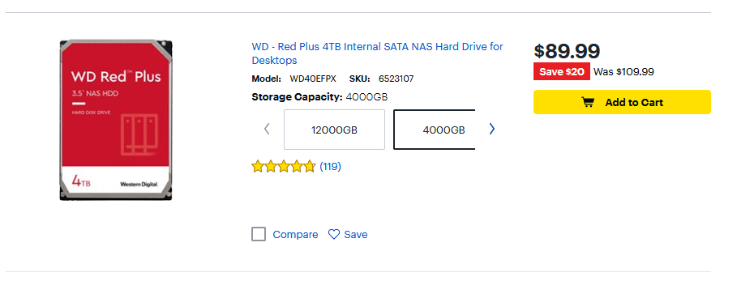

Web Stack
Async
Cloud
Announcements
- Welcome to DATA-599: Cloud Computing!
- Could it be another Python week?
- The fourth homework, "(Actual) WordCount", is due this week at 6 PM on Wed/Thr (now).
- Fifth homework is make_tsv.py
- Python scripting for cloud-first work.
Today
- Big Idea: Architecture, to introduce...
- Hadoop in Dataproc (GCP)
- This is fully cloud-first Hadoop
- It's also Pythonic and we know* Python.
- On GCP: Dataproc+Buckets work well together.
- On Azure: HDInsight+"Blob Storage" or "Data Lake"
- On AWS: EMR+S3
Recall: BIG IDEA
- Cloud computing is complicated, but
- We can break it down with "big ideas"
- Big idea was: "Data" vs "Compute"
- Big idea today: "Architecture"
- Computer Architecture
- Network Architecture (kinda but not really)
- Cloud Architecture
Computer Architecture
- Computer architecture in general is out of scope for a cloud class, but...
- Some elements of computer architecture matter A LOT.
- Following up on "Data/Compute" we care a lot about this CPU vs Memory Unit split.

Modern desktop/laptop devices are von Neuman machines, more or less.
Compute: ALU vs CPU
- The ALU is a subset of the CPU.
- While the ALU performs operations...
- the CPU is responsible for managing memory and coordinating data flow.
- ALU (Arithmetic Logic Unit)
- Performs arithmetic and logical operations
- Part of the CPU
- Handles specific tasks like addition, subtraction, comparison
- CPU (Central Processing Unit)
- Executes instructions from programs
- Manages overall computer operations
- Includes ALU, control unit, and registers
- ALU (Arithmetic Logic Unit)
- Takeway: ALU is purely compute, CPU handles compute+data (memory management)
- CPU vs ALU is not itself important to cloud computing, but illustrative of the broad concept.
Compute: ALU vs CPU
- The ALU is a subset of the CPU.
- While the ALU performs operations...
- the CPU is responsible for managing memory and coordinating data flow.
>>> x,y = 1,2 # CPU - store operation >>> 1 + 2 # ALU - arithmetic operation 3 >>> x + y # CPU loads x,y and ALU adds 1,2 3 >>> z = x + y # CPU loads x,y then ALU adds 1,2 then CPU stores 3 - CPU vs ALU is not itself important to cloud computing, but illustrative of the broad concept.
DATA: Callback
- The cloud emerged naturally from high quality systems programming.
- As computer chips got faster, they hit a "heat wall" where they couldn't speed up without melting.
- To get past the heatwall, Intel et al. placed multiple processing units on a single chip (e.g. Phone/Tablet/PC).
- To use multiply processing units, sometimes n pieces of code had to run at the same time.
- If n can be 8 (my phone) why not 10^6 (my phone's app's datacenters)

DATA: Even Slower
- The von Neuman architecture unhelpfully casts a broad net around "memory".
- In practice, memory management has been a core feature of computer optimization for decades.

This image is a core focus of every undergraduate CS architecture course.
Credit: Christine Eisenbeis (INRIA).
DATA: MMU
- Modern von Neuman devices additionally have an "MMU"

Do not, under any circumstances, try to understand what a TLB is.
DATA: Memory Types
- MMUs can manage both "RAM" (fast, expensive) and "SSD/HDD" (slow, affordable)

DATA: Random Access Memory (RAM)
- Random Access Memory (RAM) is a type of computer memory that is volatile and temporary.
- Volatile: requires power to maintain data storage.
- This is why it is temporary.
- It stores data that is being actively used or processed by the CPU.
- If it is in RAM, it is being read or written.
- If it is being stored, it is somewhere else (HDD/SSD)
- It is managed by ALU<->CPU<->MMU

DATA: Random Access Memory (RAM)
- The Compute/Data performance gap here is between CPU and RAM.
- DRAM is the type of RAM used to store what we think of as data.
- The other form, SRAM, is used internally within CPUs to store e.g. a request to add two numbers.
A Spectrum
| Compute | Compute over Data | Compute about Data | Data for Compute | Data | Data for Data |
|---|---|---|---|---|---|
| ALU | CPU | MMU | RAM | SSD | HDD |
| Arithmetic Logic Unit | Central Processing Unit | Memory Management Unit | Random Access Memory | Solid State Drive | Hard Disk Drive |
| Add/Mult/And | Read/Write | Direct Read/Write to Ram/SSD | Store an active dataframe of ~1 GB | Store an operating system | Store a movie you never watch |
DATA: Size
- RAM is ~1000x smaller than HDD
- RAM - ~8-64 GB

- SSD - ~500-2000 GB
- HDD - ~1000-12000 GB

- RAM - ~8-64 GB
DATA: Price
- RAM is ~100x more costly than HDD
- RAM - $3.35/GB

- HDD - $0.02/GB

- RAM - $3.35/GB
This was just the first shopping result in a naive search, but approximately representative of trends to the best of my knowledge.
Comparing RAM and SSD/HDD
| Aspect | RAM (Compute-Focused) | SSD/HDD (Storage-Focused) |
|---|---|---|
| Function | Temporary storage for active processes | Permanent data storage |
| Volatility | Volatile (data lost when power is off) | Non-volatile (data retained when power is off) |
| Speed | Fast access speeds for quick read/write operations | Slower access speeds compared to RAM |
| Purpose | To provide fast access to data for the CPU during active tasks | To store data and programs for long-term use |
| Capacity | Typically smaller (GB range) | Typically larger (GB to TB range) |
Computer Architecture
- Takeaways:
- Performance of modern computers is driven by how they manage memory/data.
- Design of modern computers is driven by cost of underlying memory technologies.
- Desktop/laptop use cases may map poorly to cloud use cases.
- A lot of computing is about juggling RAM and SSD/HDD
- SSD vs HDD is a whole other thing (boring)
Aside: SSD vs HDD
- HDDs are circular magnetic disks that store a charge encoding a 1 or a 0
- They are old, large, stable, cheap
- They continue to store data through power outages.
- They are essentially unusuable for modern applications like video editting, ML, etc.
My desktop takes around ~5 minutes to boot from HDD and ~30s to boot from SSD.
Aside: SSD vs HDD
- SSDs (solid state drives) are basically big, cheap, RAM installations (so, chips not disks)
- They were necessary to run modern OSes which are:
- Too large for RAM, and
- Too important to read slowly
- "Word on the street" - Cloud Storage is optimized for what SSD is good at "sequential read/write".
- Basically, SSDs read big, contigious "blobs" of memory quickly, and everything else slowly.
- So the cloud almost universally uses "blob" storage for reads/writes.
My desktop takes around ~5 minutes to boot from HDD and ~30s to boot from SSD.
Aside: SSD vs HDD
- We can use the case of "movie I never watch"
- I have a 90m 720p 24fps video file of 8 GB.
- This was too large for RAM ~5 years ago (when 720p was in use)
- Way of Water: 192min 4k 48fps ~= 50x larger ~= 100s of GB
- Suppose I move a copy from SSD (where I'd watch it) to HDD
- 300 MB/s = 30 seconds to copy
- Suppose I move from one SSD to another
- 2.5 GB/s = 2500 GB/s = 3 seconds to copy (10x)
- Would be ~same speed as HDD if it was 100s of clips totaling 90m
Network Architecture
- Network Architecture in general is out of scope, but
- Clusters have internal networks that are worth making a note of.
docker network ls NETWORK ID NAME DRIVER SCOPE 71b6d7944a16 bridge bridge local f12fc6afe43e hadoop-sandbox_default bridge local fd85959e2107 hadoop-sandbox_front bridge local d2e36549eb61 host host local 98a29fb1bd37 none - "bridge", "host", and "none" are maintained by Docker
- The ones with hadoop-sandbox in the name, well
Clusters
- Use "cluster" to refer to n>1 (real or virtual) devices on a network
- Off the cloud, a Hadoop cluster performs both data and compute operations.
- DataNodes store files with HDFS
hdfs dfs -copyFromLocal -f books/* /books - NameNodes manage hadoop/mapred jobs
mapred streaming -input /books -output /words -mapper cat -reducer wc
- DataNodes store files with HDFS
- Critically - we run both these commands within Hadoop cluster.
Dockerfile
- Hadoop Sandbox helpfully jams all the networking into a container called "front"
- It's a front end for us, basically, and made it easier to use/work better.
- This snippet of the docker-compose.yaml file defines front, and the container network.
Characterize Cluster
- When I launch a HDFS Cluster:

Characterize Cluster
- 2.40% / 2000% (20 CPUs available)
- Intel(R) Core(TM) i9-10900 CPU @ 2.80GHz
- That's a 10 core dual-threaded CPU, for 20 effective CPUs.
- My virtual Hadoop Cluster has access to up to 20 CPUs and can fully utilize around 10 of them as configured.
- I don't want to set it up to use all 20, I want a few for Windows and Linux (WSL) at a minimum so I can still use my computer at all.
- Add DataNodes to increase utilization and therefore speed.
| Docker | Windows | |
|
|
Characterize Cluster
- Container Memory Usage: 1.74GB / 15.13 GB
- Installed RAM: 32.0 GB (31.7 GB usable)
- Windows is only allowing ~16 GB to Docker, which is unsurprising
- Windows is also maintaining two OS kernels (Windows and Linux) that certainly want access to 8 GB each.
- Use a container-optimized OS to allocate all RAM to containers.
| Docker | Windows | |
|
|
Storage Size
- 8Y ago, there were 14 Kaggle competition datasets that exceed 15.13 GB with no replication. src
Network Architecture
- Takeaways:
- We want to work with datasets that don't fit into "memory"
- We want to expedite work by splitting it across multiple devices.
- Clusters have internal networks that are worth making a note of.
docker network ls NETWORK ID NAME DRIVER SCOPE 71b6d7944a16 bridge bridge local f12fc6afe43e hadoop-sandbox_default bridge local fd85959e2107 hadoop-sandbox_front bridge local d2e36549eb61 host host local 98a29fb1bd37 none - Clusters, like computers, have to consider how to handle the "memory problem".
Network to Cloud
- We cannot fit these datasets into our Docker instance.
- With on-premises computing, we'd just have physical computers and buy more hard drives.
- How does this work on the cloud?
- Things on the cloud are still on a network
- But we think of them and interact with them differently
- Critically, we are billed for them differently.
- Saving something on my harddrive is already paid for (free)
- Saving something on with AWS/AZ/GCP is n>0 dollars per byte per day.
Cloud Architecture
- Suppose we want to store ~20 TB of data in HDFS with a 2x replication factor for 40 TB total.
- I didn't make this up, it's the DataBricks example.

- Also maps exactly to the Stack Overflow challenge
- I didn't make this up, it's the DataBricks example.
- It is unlikely a client with 20 TB in data can afford 20 TB of RAM.
- We want to study our data (using compute)
- We want to store our data (data as data)
- We can't spend 67000 USD on RAM
- If we use our own cluster, no problem, HDFS will automatically distribute.
- But somehow we have direct the cloud to use some distribution of RAM/HDD to achieve our goals.
- The cloud also has to know how to store new data added
- The cloud has to know how to respond to requests for computationally expensive operations (OCR vs WordCount)
DATA: Cloud Big
- Google is one of the largest data aggregators
- Google held approximately 15 exabytes in 2013 [src]
- Google's reported power use increased 21%/anum from 2011->2019
- Hard-drives grew 16x from 2012 to 2023 from less than 2 TB [src] to 32 TB [src]
- Google current storage is around 15 exabytes * 1.21^10 * 16 = 1614 exabytes
- 10x every 5 years within one company, but # of data companies also grows.
- I have generated 134 MB of teaching materials in 3 years, or .0000000000134 exabytes
It is generally regarded that...

(12.4/2.6)^(1/8) = 1.21
DATA: Price Delta
- I estimate the cloud holds ~2 zettabytes = 10^12 gigabytes
- RAM - $3.35/GB * 2 * 10^12 = 7 trillion USD = 28% US GDP (roughly Finance + Manufacturing)
- HDD - $0.02/GB * 2 * 10^12 = 40 billion USD = DataBricks market cap (one start-up)
- RAM - $3.35/GB * 2 * 10^12 = 7 trillion USD = 28% US GDP (roughly Finance + Manufacturing)
If you use RAM for the cloud, you stop being a cloud economy and start being a RAM economy.
IaaS
- We can cloud-host a Hadoop cluster with IaaS VMs
- High level sketch:
- HDFS: Make a VM for the NameNode
- (YARN: Make a VM for the ResourceManager)
- HDFS: Make n VMs for the DataNodes
- (YARN: Make n VMs for the NodeManagers)
- Make a virtual cloud network and connect them.
- SSH into namenode to run jobs.
- Hadoop Sandbox basically does this, just with containers instead of VMS
hadoop-client: Runs an SSH server to serve as client node hadoop-hdfs-namenode: Runs the Namenode for HDFS hadoop-hdfs-datanode: Runs the Datanode for HDFS hadoop-yarn-resourcemanager: Runs the Resourcemanager for the Yarn cluster hadoop-yarn-nodemanager: Runs a Nodemanager for the Yarn cluster hadoop-mapred-jobhistoryserver: Runs the Jobhistoryserver for Hadoop Mapreduce - We could also use a CaaS solutions and just deploy Hadoop-Sandbox on Cloud (probably, it didn't work well when I tried)
But I/CaaS is inefficient because either (1) we use an unoptimized cluster or (2) manually optimize a cluster without knowledge of our platform.
Managed Hadoop
- Cloud providers universally provide Hadoop-as-a-Service, usually a default configuration for I/CaaS
Provider Compute Compute over Data Compute about Data Data for Compute Data Data for Data GCP Dataproc | Compute Engine Dataproc | Compute Engine Dataproc | Compute Engine Dataproc | Compute Engine Buckets | Cloud Storage Buckets | Cloud Storage AZ HDInsight | Azure VM HDInsight | Azure VM HDInsight | Azure VM HDInsight | Azure VM Azure Data Lake Azure Data Lake AWS EMR | EC2 EMR | EC2 EMR | EC2 EMR | EC2 S3 S3 "Dataproc | Compute Engine" means "a compute engine launched through the dataproc service".
Managed Hadoop
- Cloud providers universally provide Hadoop-as-a-Service, usually a default configuration for I/CaaS
- When purchasing cloud vms...
- GCP Compute Engine,
- Azure Virtual Machine,
- Amazon Web Services EC2 (Elastic Compute Cloud)...
- ...we rent/purchase a combination of vCPU (v = virtual) and Memory.
- Memory here is explicitly RAM, what I called "Data for Compute".
- Dataproc also runs on GKU (Google Kubernetes Engine = Google CaaS)...
- But not for Hadoop, only for Spark
- The Hadoop Data/Name distinction isn't great for containers on cloud (where they scale)
Managed HCFS
- HCFS = Hadoop Compatible File System
- Per Hadoop documentation:
- Aliyun OSS
- Amazon S3
- Azure Blob Storage
- Azure Data Lake Storage
- Tencent COS
- Huaweicloud OBS
- Of note: No Google HCFS, because (per Google):
HDFS with Cloud Storage: Dataproc uses the Hadoop Distributed File System (HDFS) for storage. Additionally, Dataproc automatically installs the HDFS-compatible Cloud Storage connector, which enables the use of Cloud Storage in parallel with HDFS. Data can be moved in and out of a cluster through upload and download to HDFS or Cloud Storage.
- ... Google just uses HDFS, because (per Databricks):
The design of HDFS was based on the Google File System. It was originally built as infrastructure for the Apache Nutch web search engine project but has since become a member of the Hadoop Ecosystem.
Cloud Architecture
- Suppose we want to store ~20 TB of data in HDFS with a 2x replication factor for 40 TB total.
- I didn't make this up, it's the DataBricks example.
- Also maps exactly to the Stack Overflow challenge
- I didn't make this up, it's the DataBricks example.
- We store 20 TB in some kind of vendor dependent HCFS
- We read it via HDFS on vendor dependent VMs or containers
- VMs copy blobs into RAM on various VMs to work on
- We pay for a little bit of RAM and a lot of HDD
- The VMs have some computer architecture (von Neuman)
- The cluster has a network architecture (Name/Data)
- The file system has a cloud architecture (HDDs somehow)
Dataproc
Week 05
Cloud
RECALL: Managed Hadoop
- Cloud providers universally provide Hadoop-as-a-Service, usually a default configuration for I/CaaS
Provider Compute Compute over Data Compute about Data Data for Compute Data Data for Data GCP Dataproc | Compute Engine Dataproc | Compute Engine Dataproc | Compute Engine Dataproc | Compute Engine Buckets | Cloud Storage Buckets | Cloud Storage "Dataproc | Compute Engine" means "a compute engine launched through the dataproc service".
Today
- Big Idea: Architecture, to introduce...
- Hadoop in Dataproc (GCP)
- This is fully cloud-first Hadoop
- It's also Pythonic and we know* Python.
- On GCP: Dataproc+Buckets work well together.
Google Console
- Access GCP Console:
- https://console.cloud.google.com
- If you still don't have console access, I have an email into support and you can find a partner for the first part.
- We are going to look at two main services: Dataproc and Buckets
Dataproc: Creation
- Type "Dataproc" into the search bar, the first result takes me to a "clusters" tab in "Dataproc"
- Click around a bit and get a feel for things, then...
- Create a new cluster.
- This is not easy, so practice debugging:
- For me: I couldn't get "Create Cluster" to work, so I used the cloud shell.
- Click the little to open cloud shell.
- Review this documentation and think about how you would it on your own: Create a cluster
- I used the following command without issue:
gcloud dataproc clusters create clever-name --region us-central1 - I selected US Central since US West seems finicky.
- REMEMBER: Once you create a cluster, it will cost (a small amount of money) until deleted.
- You may encounter errors, practice debugging them!
- I think on our EDU licenses we might sometimes just not get resources - that's okay, just play with the process a bit!
- For me: I couldn't get "Create Cluster" to work, so I used the cloud shell.
Dataproc: Usage
- Type "Compute Engine" into the search bar, the first result takes me to a "VM instances" tab in "Compute Engine"
- There is one "m" (NameNode) and several "w" (DataNode) VMs, most likely
- SSH into the NameNode
- Do some standard Hadoop thing, like streaming wc+cat job over a curled text file.
- We'll come back to Hadoop in a bit.
Buckets: Creation
- Type "Buckets" into the search bar, the first result takes me to a "buckets" tab in "Cloud Storage"
- Click around a bit and get a feel for things, then...
- Create a new bucket with a name you can remember, in a region you can remember
- Other settings don't really affect us, but I turned off soft delete to use less storage.
- If you still don't have console access, I have an email into support and you can find a partner for the first part.
- REMEMBER: Once you create a bucket, it will cost (a small amount of money) until deleted.
Buckets: File Transfer
- Once my bucket is created, I have a few options for the Bucket:
- Upload files
- Upload folder
- Create folder
- Transfer data
- Click around a bit a get a feel for things
- We will transfer data into this bucket a bit latter.
- Put a pin here.
- Maybe upload any text file for now.
Dataproc+Compute+Buckets
- Now we use the Google Storage Connector
- With an HDFS enabled Compute Engine SSH session, and a
- Bucket in Cloud Storage with an uploaded file,
- List the Google Cloud files via HDFS
hadoop fs -ls gs://bucket/dir/file - You'll need to edit the command a bit to work.
- This is how to use Hadoop without curl!
- Cloud-first Hadoop! Just like that! But wait...
Transfer Data
- Uploading files from a device is weird...
- We want to be able to scale 20+ TB! We don't (likely) have 20 TB HDDs.
- We might want to use other peoples data without copying it a bunch of times
- We might want to draw data from various sources!
- Solution: "Transfer Data"
Back to Bucket
- Go back to your Bucket
- Bucket Details
- Transfer Data
- Transfer Data In
- Source type
- Select "URL list"
- Next Step
TSV
- You've seen a CSV, now create a TSV:
- Follow these instructions
- Here is an example tsv
- I used the following Python libraries:
import os, hashlib, base64 - I used the following constants:
PREFIX = 'https://raw.githubusercontent.com/cd-public/books/main/' # DONT scrape Gutenberg BK_DIR = '../books/' - I consulted the following Base64 table: Wikipedia
- Create a file, "make_tsv.py", that when directed to a local directory BK_DIR associated with a Github "raw" url PREFIX , creates a Google-compliant .tsv file with url, file size, and md5 checksum.
- Push "make_tsv.py" and a sample tsv e.g. "books.tsv" to a Github repo somewhere and share it with me.
- You probably want to do this in a Linux environment. Think about why!
Check your work
- You may test your "books.tsv" by using it for File Transfer In.
- This will create a "Job" in GCP you can track.
- If it works, you'll see this:

- If not, you should get some helpful error messages!
- You can then run mapred jobs over these files!